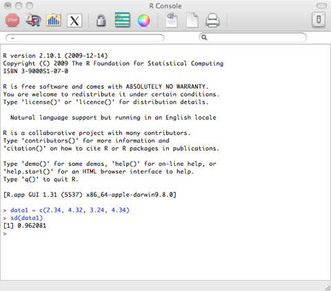
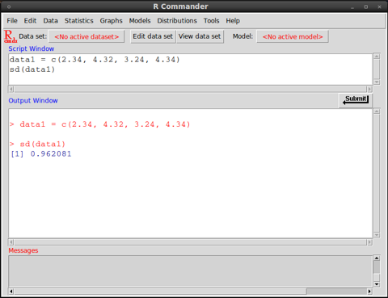

by Damir Cavar (Feb. 2010)
Installation
R can be downloaded from the following URL:
If you are not using some common Linux distribution (Ubuntu, Debian, Suse, Fedora etc.), download the version of R for your OS. If you use Linux, your package manager will allow you to add R and its components, including a graphical interface (e.g. R-Commander).
For the following examples it is necessary that the module stats is loaded in R. For all examples we use the R Console, which might look different on different Operating systems:
Mac OS X:

Ubuntu Linux 10.04 - Terminal and R-Commander:


Microsoft Windows:
Basic functions
Some data for analyses can be added manually in R in the following way:
data1 = c(2.34, 4.32, 3.24, 4.34)
This means that a list of results or measures will be saved in memory under the name data1. The name data1 serves like a variable, when calling functions and setting up analyses of the data, avoiding the repetition of the same data from the scratch in all these functions.
If you look at the set of slides 1, the discussed analyses can be performed in R now. For example, to get the arithmetic mean, simply type the following command in the R shell:
mean(data1)
This command is the same as:
mean(c(2.34, 4.32, 3.24, 4.34))
The median can be calculated using the following command:
median(data1)
The smallest and the largest result or measure can be found using the following commands:
min(data1)
max(data1)
The range can be found using this command (this means, the result will be the smallest and the largest measure or result in the data sample, and the range could be calculated by subtract the smaller from the larger value):
range(data1)
You can sum up all results or values in the data1 list using the following command:
sum(data1)
The variance can be calculated using the following command:
var(data1)
The standard deviation for the data above we get using the following command:
sd(data1)
If you collect your results and measures in a file, you can read it in from the file, without having to type it into R manually. The data might be collected in form of tables, as in:
token frequency length
meštrom 1 7
pićan 1 5
znamenite 2 9
manzonijeve 3 11
snime 1 5
iis 1 3
daržavom 1 8
zasladi 1 7
profiliranu 1 11
osmjehnu 2 8
braku 10 5
orane 1 5
...
This table is generated from some randomly selected books from the Croatian Language Corpus. The complete table can be downloaded from the folder Files. Download the file sample.dat to your computer and in R use the following command to load the data into memory:
words=read.table(file=file.choose(),header=TRUE)
If you use Microsoft Windows and R does not read in the data from the file, try to specify the encoding. The file sample.dat is encoded in UTF-8 format. The Windows version of R should be able to open and read the ANSI encoded version of the data in the file samles-ANSI.dat, without specification of the encoding, as shown above. The ANSI encoded version of the data can be found in the Files section.
words=read.table(file=file.choose(),header=TRUE,encoding="UTF-8")
Some versions of R-Commander on Linux do not open the file select box/windows with the command file=file.choose(). A quick solution is to specify the complete file name without the file select window, for example if the file sample.dat is located in the folder /tmp:
words=read.table(file="/tmp/sample.dat",header=TRUE,encoding="UTF-8")
This command would open the file without a file select window, where you can choose the specific input file.
The command with the file.choose() component will open a file selection window. This is the result of the sub-command: file.choose(). The additional option “header=TRUE” informs R that the data in the file has a header in the first line. If you select the file sample.dat in the file selection windows, R will read in the data and store it in the variable words.
The content of the variable, that is all the tokens with their frequency and length, are added to the current R workspace using the command:
attach(words)
Now you can for example plot the relation between frequency and length of words with the following command:
plot(length,frequency)
If everything went well, the result of the last command should generate a graph in a new windows that looks like the following one:

The same graph can be found in the folder Files in PDF format (open it with Acrobat Reader), with the file name Word-Freq-Length.pdf.